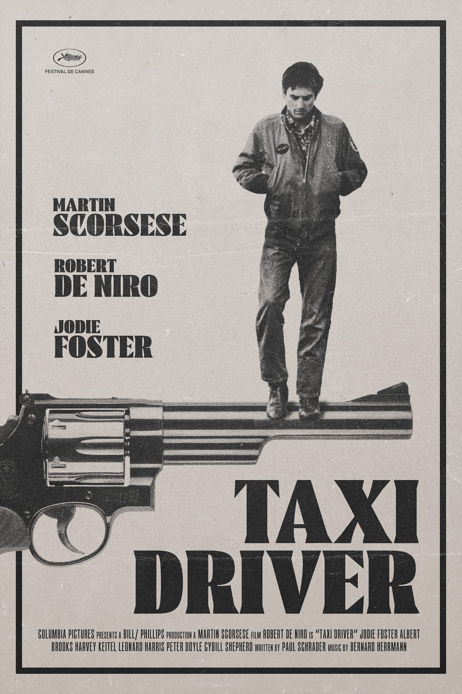
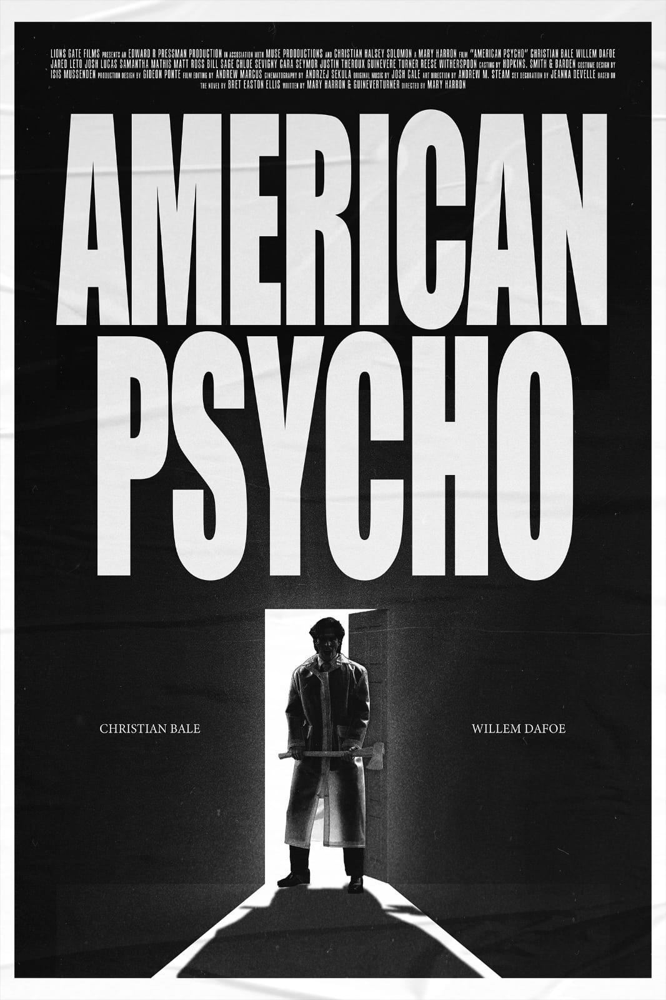
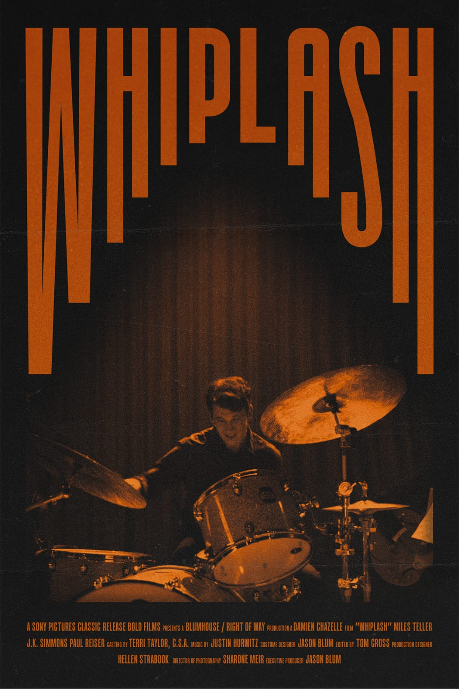

<html></html>
    <head>
        <title>Filmes</title>
        <link rel="stylesheet" href="estilo.css">
    </head>
    <body>
        <div class="introducao">
            <h1 class="introducao1">Filmes Que Nos Habitam</h1>
            <h2 class="introducao2">Do cult ao inusitado, filmes que provocam, fazem pensar ou simplesmente prendem - Com imagem e sinopse pra você decidir o próximo.</h2>
            <hr>
        </div>

        <div class="div-pai">
            <div class="div1">
                <h3>Taxi Driver (1976)</h3>
                <p><strong>Diretor:</strong> Martin Scorsese</p>
                
                <p> Travis Bickle, um ex-fuzileiro solitário e perturbado, trabalha como taxista nas ruas de Nova York. Incomodado pela decadência da cidade e consumido pela solidão, ele mergulha em uma espiral de obsessão e violência enquanto tenta "limpar" o mundo ao seu redor. Um retrato sombrio da alienação urbana e da fragilidade mental.</p>
                <br>
                <a href="https://youtu.be/zdqCqDSTVNI?si=R4mgH_z6FhJ6l9QE"><button>Clique aqui para acessar o Trailer...</button></a>
            </div>

            <div class="div2">
                <h3>Psicopata Americano (2000)</h3>
                <p><strong>Diretor:</strong> Mary Harron</p>
                
                <p>Patrick Bateman é um jovem rico, bonito e bem-sucedido que trabalha em Wall Street. Por trás de sua fachada perfeita, ele esconde uma identidade sombria: a de um assassino em série com impulsos violentos e perturbadores. Entre luxo, vaidade e delírios, o filme explora as máscaras do ego, o vazio da elite e os extremos da desumanização.</p>
                <br>
                <a href="https://youtu.be/81mibtQWWBg?si=nPT2zGZxCsfTM0YV"><button>Clique aqui para acessar o Trailer...</button></a>
            </div>

            <div class="div3">
                <h3>Whiplash: Em Busca da Perfeição (2014)</h3>
                <p><strong>Diretor: </strong> Damien Chazelle</p>
                
                <p> Andrew Neiman é um jovem baterista determinado a se tornar um dos grandes nomes do jazz. Ao entrar no conservatório de música mais respeitado dos Estados Unidos, ele chama a atenção do temido e exigente professor Terence Fletcher. A relação entre os dois se transforma em um confronto intenso, onde talento, obsessão e abuso se misturam numa busca extrema pela perfeição.</p>
                <a href="https://youtu.be/oAhvG3wIE_g?si=ROLQg2-q4dgCVpbl"><button>Clique aqui para acessar o trailer...</button></a>
            </div>

            <div class="div4">
                <h3>O Fantástico Sr. Raposo (2009)</h3>
                <p><strong>Diretor: </strong> Wes Anderson</p>
                
                <p>O Sr. Raposo leva uma vida tranquila com sua família, mas sente falta da emoção dos velhos tempos como ladrão de galinheiros. Ao decidir voltar à ativa, ele acaba entrando em conflito com três fazendeiros poderosos e cruéis, colocando sua comunidade em risco. Com uma animação em stop-motion charmosa e um humor inteligente, o filme mistura aventura, estilo único e reflexões sobre instinto, família e liberdade.</p>
                <a href="https://youtu.be/n2igjYFojUo?si=l17o4ZJSZj42Lvvs"><button>Clique aqui para acessar o Trailer...</button></a>
            </div>
        </div>

        <div class="div-pai">
            <div class="div5">
                <h3>The Lobster (2015)</h3>
                <p><strong>Diretor: </strong> Yorgos Lanthimos</p>
                
                <p>Em um futuro distópico, pessoas solteiras são obrigadas a encontrar um parceiro romântico em até 45 dias, ou serão transformadas em um animal de sua escolha. David, recentemente abandonado pela esposa, é levado a um hotel onde deve seguir essa regra absurda. Enquanto tenta se adaptar, ele questiona o sentido do amor, da solidão e das convenções sociais. Um filme estranho, provocador e profundamente original sobre relacionamentos e identidade.</p>
                <a href="https://youtu.be/vU29VfayDMw?si=ZCwHbb0va3_Isl9W"><button>Clique aqui para assistir o Trailer...</button></a>
            </div>

            <div class="div6">
                <h3>Aftersun (2022)</h3>
                <p><strong>Diretor: </strong> Charlotte Wells</p>
                
                <p>Sophie, uma mulher adulta, relembra as férias que passou com seu pai Calum quando era criança, em um resort na Turquia. Através de memórias fragmentadas e registros em vídeo, ela tenta compreender melhor aquele homem silencioso e complexo, e os sentimentos que estavam escondidos por trás de sua calma. Um filme delicado e melancólico sobre afeto, lembrança e tudo o que fica nas entrelinhas do que foi vivido.</p>
                <a href="https://youtu.be/vXKcWRu8K_U?si=GIuof2jJuZ0WTWpT"><button>Clique aqui para assistir o Trailer...</button></a>
            </div>
        </div>

        <hr>
    </body>
</html>